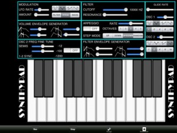
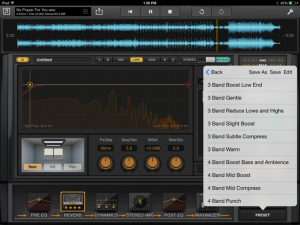
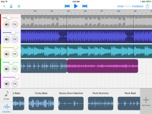
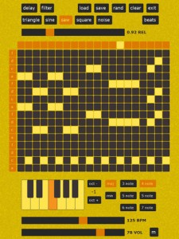
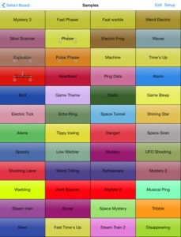
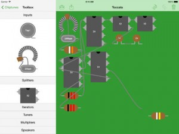
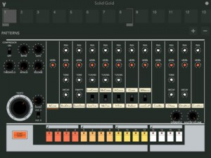
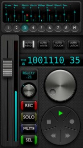
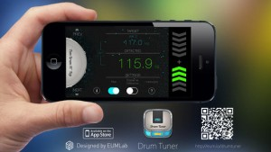
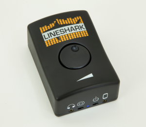

[appext 838306221]There could be many reasons for someone to need a keyboard or synth at a certain moment, and with Synthy iPad Player you can have one on your iPhone, in your pocket. With its amazing compatibility and customizable features it’s not hard for someone to fall in love with Synthy iPad Player. Boat load of customizable features gives the user a perfect opportunity to create the perfect sound they are looking for.
Go ahead, be an artist and create your own songs right in the palm of your hand. Easily record your own work right there and save it for future reference, with an unlimited amount of time for recording there is no limit on what you can record!
Features include:2 oscillators
Oscillator frequency fine tune
Variable glide rates
Modulation amount and lfo rate
Volume envelope generators for – attack, sustain, release, delay
Frequency filter cut offs
Resonance
Filter envelope generators for – attack, sustain, release ,delay Adjustable arpeggio with variable octaves and step mode
Synthy iPad Player
Final Touch (finally) debuts!
I’ve been lucky enough to have been on the beta testing team for this excellent iPad app over the past moth or so, and really enjoyed watching it take final shape. I’ll aim to do a review in the next few days, but for now here’s the official word from it’s maker, Positive Grid –
Positive Grid, leading innovator in music technology and maker of #1 selling mobile apps BIAS and JamUp, proudly announce the release of Final Touch – Complete Mastering System for iPad, a professional mastering suite that combines nuanced techniques of mastering with Positive Grid’s expertise on mobile design, offering the highest mastering control, precision and flexibility possible on an iPad.
“Final Touch allows musicians, producers and engineers to master audio recording with the industry’s standards: maximizer, pre and post equalizer, multiband dynamics, stereo imaging, reverb and dithering controls are all just one finger tap away”, says Positive Grid Marketing Manager Jaime Ruchman. “And now they will be able to continue their mastering sessions literally anywhere, with the same sound quality as a top notch professional mastering studio, enhancing productivity to its maximum.”
Final Touch combines seven essential mastering tools into one integrated system, the Pre and Post linear phase EQ modules consist of eight independent bands, each providing a choice of five different types of parametric filters: Hi-Pass, Low-Shelf, Peak, Hi-Shelf and Low-Pass. The Dynamics module offer highly flexible stereo/mid-side multiband compressor/limiter. The Stereo Imaging module adjusts the width of your mix, corrects L/R channel imbalances and checks mono compatibility. The Reverb module offers flattering room, hall and plate algorithms to sweeten overly dry mixes, providing continuously variable controls for independently adjusting Pre-Delay, Decay Time, Early Reflections and Room Size. The Maximizer module limits peaks and raises the average level of your mix, thereby increasing loudness. Comprehensive dither and noise-shaping options are also provided in this module.
Once your master is perfectly dialed, a couple taps are all it takes to share it via email, Dropbox, iTunes and SoundCloud.
“A great mastering app” – Rafa Sardina, 12-time GRAMMY award winning producer and engineer, whose credits include Lady Gaga, Michael Jackson, Beyonce, and more.
“Solid, accurate and accessible.”– German Villacorta, mastering engineer and owner of Dynamic Wave Studios, whose credits include Ozzy Osbourne, The Rolling Stones, Rage Against The Machine, and more.
“Finally the professional mastering app for iPad I have been waiting for! With a clear and intuitive interface, streamlined workflow, powerful effects, and full cloud support this app makes professional mobile mastering a reality!” – Andrea Pejrolo, Assistant Chair of the Production Department at Berklee College of Music.
“I’m really digging the open top end of the EQ section and how the Maximizer is glueing this mix together. This is a flexible, very cool audio app for modern musicians on the go.” – Enrique Gonzalez Muller, GRAMMY award winning producer and engineer, whose credits include Nine Inch Nails, Dave Matthews Band, Tina Turner, and more.
Key Features:
• Complete professional mastering system powered by Positive Grid’s high-end signal-processing algorithms
• Linear Phase Pre and Post Equalizers, each offering eight bands and five filter types
• Multiband Dynamics with four independent bands of compression/limiting
• Stereo Imager adjusts the width and balance of your mix’s soundstage
• Reverb provides state-of-the-art Room, Hall and Plate algorithms
• Maximizer transparently limits peaks to make your mix louder
• Dithering and Noise-Shaping preserves your mix’s depth and nuance
• Stereo and mid-side processing
• High-resolution, multi-colored metering with accurate readouts
• Each module can be independently bypassed
• Bypass switches for individual EQ bands
• Left, right, mid and side channels can be independently soloed or bypassed
• Waveform overview of your mix, with draggable playback cursor
• 100 factory presets and unlimited user presets
• Global and module-based presets
• Drag and drop modules to rearrange their order in the signal path
• Pristine, high-resolution sound (double-precision, 64-bit calculation)
• Unmatched audio-data integrity: no rounding or truncation except when calculations are performed
• Share via Email, Dropbox, iTunes, SoundCloud and FTP
• Streamlined project management: browse multiple projects with one simple tap
• Workflow optimized for mobile and desktop data transfers
• Supports Inter App Audio and Audiobus routing system (works with many other audio apps)
• Supports iPad 2, iPad mini and newer iPad devices
• Designed for iOS 7
Final Touch retails for $19.99 and is immediately available for download at the iTunes App Store. Designed for iOS7, the app requires an iPad 2 or newer to operate.
For more details, visit www.positivegrid.com or follow the company via Twitter (@PositiveGrid) or Facebook (www.facebook.com/positivegrid).
[appext 823605276]
Mixbox
[appext 827976164]Make music from music with Mixbox! Create remixes and mashups using songs from your iPad with this simple and colorful app.
– Automatically mix and match songs from your iPad.
– Split up songs and rearrange them as you like.
– No training necessary – Mixbox makes it easy for anyone to make new music.
– Save your creations to email or iTunes.
– Add audio effects like distortion, reverb and delay.
– Comes with pre-made sample clips that sound great with any song.
– Mixbox beatmatches and pitch-corrects your music to make your creations sound professionally made.
S.A.M.M.I.
[appext 840066930]S.A.M.M.I. is an application for sound experiments and sonic formations, featuring a sequencer, drone machine and theremin.
Features:
Sequencer – including key, note range, 5 waveforms, delay, filters, release, bpm, number of beats and loading/saving patches.Drone machine – four oscillators with 5 waveforms, frequency/note, detune, filters, LFO (controlling volume/pitch/filter), delay effect and loading/saving patches.
Theremin – including tilt/touch control, starting note/frequency, note range, interpolation/step frequency change and delay effect.
Just experiment and see what happens!
S.A.M.M.I. has been tested on iPad2+ and is supported by ads on the menu screen.
Synth 76477
Synth 76477 is a powerful sound effects generator and synthesizer app, inspired by the famous SN76477 integrated circuit from the 1970s, but containing many enhancements.
Features:• Three oscillators, each of which can produce a sine, triangle, sawtooth, or square wave
• The outputs of two of the oscillators can be used to modulate the main oscillator
• Frequency modulation can be linear or octave based
• The duty cycle of the main oscillator can be adjusted in square wave mode
• Noise generator, either analog or digital, with an adjustable low pass filter
• Oscillator outputs can be mixed to the audio output
• Fully configurable ADSR (Attack / Decay / Sustain / Release) envelope, linear or exponential
• One shot mode available
• Unlimited number of sound effect generator boards
• User configurable array of sound effect generator buttons on each board, up to 50 on the iPhone and 150 on the iPad
• Boards as well as individual generators can be exported and imported, and transfered to and from your computer via iTunes file sharing, making it easy to share with othersSynth 76477 comes with a full set of sample sound generators, making it easy to understand how to use and configure them, and tap the full power of the app.
Note that Synth 76477 does not presently run in the background.
Buy your copy right now, and start generating your own sound effects in minutes.
App’s homepage – http://www.blackcatsystems.com/ipad/complex_sound_synthesizer.html
Cool tutorial demo video –
[appext 837866239]
Chiptunes Pro
Chiptunes lets you make retro music the way it should be made – with chips! Build your circuit to lay down drum beats, basslines, and tunes.
Drag components from the toolbox. Drag between components to create connections. Swipe across connections to break them. Connect inputs and speakers to create your tune.
This video gives a great insight into this cool app
[app 838163742]
BOOM 808!
[appext 735889660]Boom 808 integrates one of the most popular drum machines of the 80’s into the modern mobile producers workflow.
With Boom 808, getting the classic 808 drum sounds into your music has never been easier. Audiobus compatibility, background audio, and audio export options allow Boom 808 to fit into your music without slowing you down.
Personalize your beats with the sound of the 808!
Features:
• Step sequencer
• High fidelity audio
• CoreMIDI
• Audiobus and background audio modes
• Record and export live performance to Soundcloud, Audio Copy, email and iTunes file sharing
• Compressor
• Swing
• OverdriveBoom 808 provides the superb audio quality found in our other Pulse Code apps. Along with the classic drum sounds, Boom 808 has a built in compressor that is tuned to add punch to your drum beats. Soft saturation overdrive rounds out the signal chain adding warm crunch to your beats.
Using Boom 808 with Audiobus allows you to add any number of Audiobus compatible effects as well as record your beats into the app of your choice. Writing beats is easy by using the internal step sequencer or trigger the drums with CoreMIDI. Control your groove with two swing variations.
AC-7 Core Solo
[appext 832673361]AC-7 Core Solo is the perfect hand-held wireless remote controller for your DAW based music recording system. It was expressly designed to be used comfortably with one hand, so there’s no need to put down your guitar/mic/drink while setting up the next take.
It has been tested and optimised for use with Apple’s Logic Pro X, but most of its functions will work equally well with any DAW which supports the MCU protocol. These include Reaper, Cubase, Digital Performer, Adobe Audition and many more.
(Avid’s ProTools is NOT supported in this release. We’re working on a separate dedicated ProTools controller app, which should be available soon)
How to set up on a Mac:
Make sure the computer is connected to the same wifi network, then navigate to Finder -> Go -> Utilities -> and open “Audio MIDI Setup”
Double click the Network icon in the MIDI window, then add a new session in “My Sessions” and enable it by clicking the checkbox.
Make sure “Anyone” is selected in the “Who can connect to me” section, then open the AC-7 Core Solo app on your device.
Your iOS device’s name will now appear in the Directory area, so click the name then click the “Connect” button.
Now simply open Logic Pro X, and the AC-7 Core Solo will be automatically detected and configured.
Drum Tuner
[appext 834487922]Drum tuning is complicated, time consuming and sometimes tedious whereas every drummer must face it and learn it. This Drum Tuner helps professional drummers like you master the sounds of your drums accurately and effectively.
Specially designed for drum users, the Drum Tuner is professional in recognizing drum strokes. Instead of changing the output frequency ceaselessly like a real time tuner, the Drum Tuner only report a single precise frequency once a drum stroke is detected.
With our professional experiences and algorithms in instrument tuning, the Drum Tuner is extremely accurate. It is especially good at tuning your drum lugs to a specified target frequency with the filter mode, which picks only the frequencies that are near your target. It is also possible to show the difference frequencies instead of real frequencies once you have set a target so that you know to tune higher or lower immediately.
The Drum Tuner is ideal for tuning drum set, as well. With the favorite drum list, you can save and manage unlimited number of drum settings for later use. And it is very easy to manage and change among the saved drums.
———————————————————
Features:
———————————————————
Drum stroke detection;
Highly accurate tuning algorithm;
Overtone filter and difference mode;
Easy-to-use drum list with unlimited slots;
Optimized for Snare, Tom and Bass Drums;
LineShark – The Audio Interface
Saw this posted on Kickstarter recently and think it’s a great new piece of gear that hopefully sees the light of day. Basically it’s a ‘go anyway, plug in anything’ type audio interface for iOS and Android devices. Here’s a brief outline from the creators –
The LineShark enables musicians to bring performances to life by adding the creativity and power of mobile devices to their live setup. As musicians ourselves, we’re always looking for new ways to create music. We started exploring the music apps that are available for smartphones and tablets, but we couldn’t find an all-in-one interface for those devices that fit our love for performing on stage. We know musicians need something different on stage than they do in the studio, and there wasn’t an interface that was built with performers in mind.
Check the full details on the Kickstarter page, and if you can afford it, donate, as they are still well short of their target as of today.


{kind=link}
{kind=link}
{kind=link}
{kind=link}
{kind=link}
{kind=link}
{kind=link}
{kind=link}
{kind=link}
{kind=link}